AGRA FORT
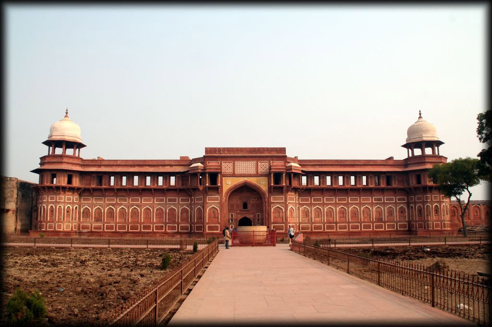To get a sense of the rich history of the Mughal era, visit the walled palatial Agra Fort, one of the famous places in India that is built entirely of red sandstone. Built in 1565 by Akbar, this historical tourist place in India has two ornately designed gates: the Amar Singh Gate and the Delhi Gate. You can only enter through the Amar Singh Gate to uncover an ancient city filled with gateways, courts, passages, palaces and mosques.
History
After the First Battle of Panipat in 1526, the Babur stayed in the fort, in the palace of Ibrahim Lodi. He later built a baoli (step well) in it. His successor, Humayun, was crowned in the fort in 1530. He was defeated at Bilgram in 1540 by Sher Shah Suri. The fort remained with the Suris till 1555, when Humayun recaptured it. Adil Shah Suri's general, Hemu, recaptured Agra in 1556 and pursued its fleeing governor to Delhi where he met the Mughals in the Battle of Tughlaqabad.
Realising the importance of its central situation, Akbar made it his capital and arrived in Agra in 1558. His historian, Abul Fazl, recorded that this was a brick fort known as 'Badalgarh'. It was in a ruined condition and Akbar had it rebuilt with red sandstone from Barauli area Dhaulpur district, in Rajasthan. Architects laid the foundation and it was built with bricks in the inner core with sandstone on external surfaces. Some 4,000 builders worked on it daily for eight years, completing it in 1573.
It was only during the reign of Akbar's grandson, Shah Jahan, that the site took on its current state. Shah Jahan built the beautiful Taj Mahal in the memory of his wife, Mumtaz Mahal. Unlike his grandfather, Shah Jahan tended to have buildings made from white marble. He destroyed some of the earlier buildings inside the fort to make his own.
At the end of his life, Shah Jahan was deposed and restrained by his son, Aurangzeb, in the fort. It is rumoured that Shah Jahan died in Muasamman Burj, a tower with a marble balcony with a view of the Taj Mahal.
The fort was invaded and captured by the Maratha Empire in the early 18th century. Thereafter, it changed hands between the Marathas and their foes many times. After their catastrophic defeat at Third Battle of Panipat by Ahmad Shah Abdali in 1761, Marathas remained out of the region for the next decade. Finally Mahadji Shinde took the fort in 1785. It was lost by the Marathas to the British during the Second Anglo-Maratha War, in 1803.
The fort was the site of a battle during the Indian rebellion of 1857, which caused the end of the British East India Company's rule in India, and led to a century of direct rule of India by Britain.
Layout
The 380,000-square-metre (94-acre) fort has a semicircular plan, its chord lies parallel to the river and its walls are seventy feet high. Double ramparts have massive circular bastions at intervals, with battlements, embrasures, machicolations and string courses. Four gates were provided on its four sides, one Khizri gate opening on to the river.Two of the fort's gates are notable: the "Delhi Gate" and the "Lahore Gate." The Lahore Gate is also popularly also known as the "Amar Singh Gate," for Amar Singh Rathore.
The monumental Delhi Gate, which faces the city on the western side of the fort, is considered the grandest of the four gates and a masterpiece of Akbar's time. It was built circa 1568 both to enhance security and as the king's formal gate, and includes features related to both. It is embellished with inlay work in white marble. A wooden drawbridge was used to cross the moat and reach the gate from the mainland; inside, an inner gateway called Hathi Pol ("Elephant Gate") – guarded by two life-sized stone elephants with their riders – added another layer of security. The drawbridge, slight ascent, and 90-degree turn between the outer and inner gates make the entrance impregnable. During a siege, attackers would employ elephants to crush a fort's gates. Without a level, straight run-up to gather speed, however, something prevented by this layout, elephants are ineffective.
Because the Indian military (the Parachute Brigade in particular) is still using the northern portion of the Agra Fort, the Delhi Gate cannot be used by the public. Tourists enter via the Amar Singh Gate.
The site is very important in terms of architectural history. Abul Fazal recorded that five hundred buildings in the beautiful designs of Bengal and Gujarat were built in the fort. Some of them were demolished by Shah Jahan to make way for his white marble palaces. Most of the others were destroyed by the British between 1803 and 1862 for raising barracks. Hardly thirty Mughal buildings have survived on the south-eastern side, facing the river. Of these, the Delhi Gate and Akbar Gate and one palace – "Bengali Mahal" – are representative Akbari buildings.
Akbar Darwazza (Akbar Gate) was renamed Amar Singh Gate by the British. The gate is similar in design to the Delhi Gate. Both are built of red sandstone.
The Bengali Mahal is built of red sandstone and is now split into Akbari Mahal and Jahangiri mahal.
Interesting fact: This fort was included in one of Sherlock Holmes’ cases: the “Sign of the Four” and was also the location for the movie Jodha Akbar.
Entry fee: Indians- INR 40
Foreigners- INR 550
Open from: Sunrise to sunset
Must see: Jahangir Palace, Nagina Masjid, Moti Masjid, Mina Masjid and Zenana Mina Bazaar.
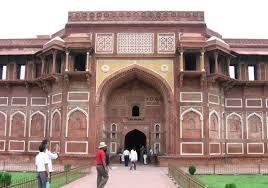
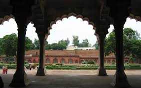
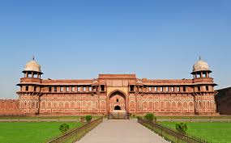
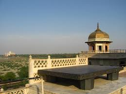
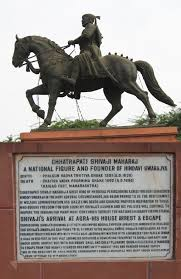
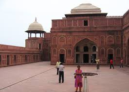
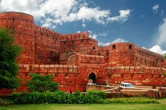
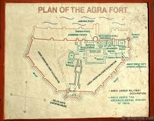
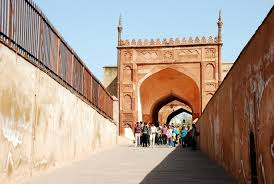
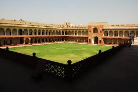